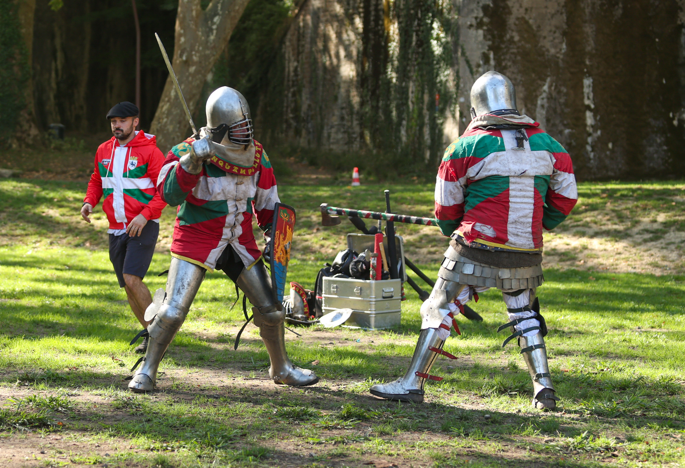

Bayonne combined running with a journey through its historic surroundings on 20 September 2026, when Aviron Bayonnais staged the second Course du Patrimoine. Organised in collaboration with the city during the European Heritage Days, the event paired a timed race with a family walk.
The official Pyrénées Chrono results list Florian Molteni first in 42:21, followed by Cédric Simovis in 43:55 and Damien Manton in 45:50. Eugenie Ponleve finished fourth overall in 46:24 and was the first woman, ahead of Estelle Jacquemin in 48:28 and Ines Lafourcade in 55:06.
A course through the city’s heritage
The organiser’s programme advertised an 11.5 km race and an 8 km walk, with landmarks including the Arènes, the Citadelle and the cathedral among the sites listed along the route. The results platform uses the label “10km”; the finishing times reported here follow that official classification, without treating its distance label as a confirmed measurement.

Jhonny’s photographs for Image Media show two sides of the day: runners moving beside a stone balustrade in the city, and an armoured combat demonstration on a grassy site. Together, the images place the sporting effort alongside the historical character that gives the event its name.
Image Media coverage
Reporting: IM News Editorial Desk
Coverage photographers: Eduardo Castro, Johnny, Barbara Milavec and José Ramón Moreno / Image Media
Event details checked against the organiser and Bayonne Tourist Office; results checked against Pyrénées Chrono. Both photographs are credited to Jhonny.